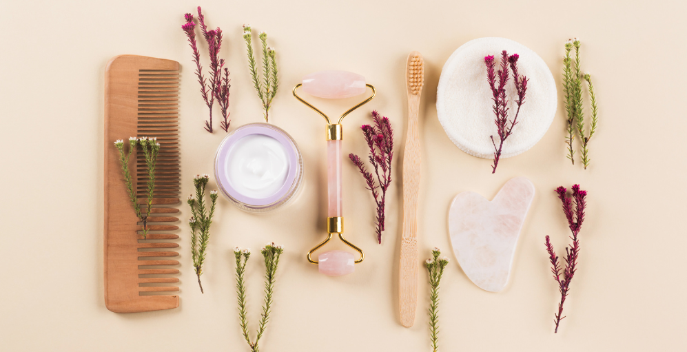

Beauty Tips

In a world brimming with beauty products and routines, it's easy to overlook the incredible power of simple,
natural practices for enhancing your radiance. Today, we're delving into a treasure trove of timeless beauty
tips inspired by the wisdom of nature. Beauty is not just skin deep; it's an intricate dance between self-care,
nourishment, and a touch of magic. Whether you're a skincare enthusiast or someone seeking a gentle, holistic
approach, these natural beauty tips are designed for anyone who believes in the beauty of simplicity.
Join me on this journey as we explore ways to nurture your skin, embrace your uniqueness, and radiate confidence
from within. From the importance of hydration to the transformative effects of a good night's sleep, let's
uncover
the secrets that Mother Nature has bestowed upon us. Are you ready to embark on a path of self-love and natural
beauty?
Let's dive into these practical and empowering tips that every woman should know for a radiant and harmonious
glow!
Stay Hydrated:
- Drink plenty of water throughout the day to keep your skin hydrated and promote a healthy
complexion.
Balanced Diet:
- Consume a balanced diet rich in fruits, vegetables, lean proteins, and whole grains.
- A nutritious diet can positively impact your skin's health.
Cleanse Your Face:
- Cleanse your face regularly to remove impurities, oil, and makeup. Use a gentle, natural
cleanser suitable
for your skin type.
Moisturize:
- Apply a natural moisturizer to keep your skin soft and supple. Consider using ingredients like
coconut oil,
shea butter, or aloe vera.
Sun Protection:
- Use sunscreen with adequate SPF to protect your skin from harmful UV rays. This helps prevent
premature
aging and reduces the risk of skin cancer.
Adequate Sleep:
- Ensure you get enough sleep to allow your body and skin to rejuvenate. Lack of sleep can lead to
dark
circles and dull skin.
Sun Protection:
- Use sunscreen with adequate SPF to protect your skin from harmful UV rays. This helps prevent
premature
aging and reduces the risk of skin cancer.
Adequate Sleep:
- Ensure you get enough sleep to allow your body and skin to rejuvenate. Lack of sleep can lead to
dark
circles and dull skin.
Facial Masks:
- Apply natural facial masks made from ingredients like honey, yogurt, or avocado for added
hydration and nourishment.
Limit Makeup Use:
- Allow your skin to breathe by minimizing the use of heavy makeup. Consider going makeup-free on
certain days to let your skin recover.
Hair Care:
- Use natural oils like coconut oil or argan oil for hair conditioning. Limit the use of heat
styling tools to prevent damage.
Regular Exercise:
- Engage in regular physical activity to promote blood circulation, which contributes to healthier
skin.
Stay Consistent:
- onsistency is key in any beauty routine. Stick to your skincare regimen and give it time to show
results.
Positive Lifestyle Habits:
- Avoid smoking and limit alcohol intake. These habits can negatively impact your skin's health.
Remember, individual skin types vary, so it's essential to pay attention to what works best for your unique
needs. Additionally,
if you have specific skin concerns, it's advisable to consult with a dermatologist for personalized advice and
guidance.